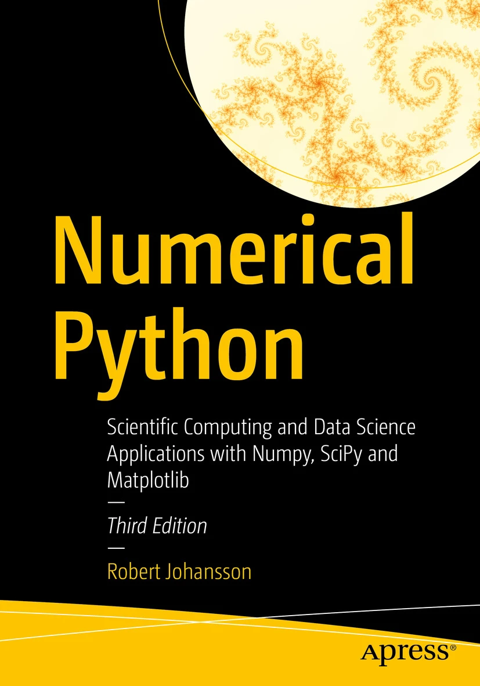

ISBN13: 979-8-8688-0412-0 (ebook 979-8-8688-0413-7)
Author: Robert Johansson
Publisher: Springer / Apress
For more information, see the book's page on publisher's web site.
Numerical Python by Robert Johansson shows you how to leverage the numerical and mathematical capabilities in Python, its standard library, and the extensive ecosystem of computationally oriented Python libraries, including popular packages such as NumPy, SciPy, SymPy, Matplotlib, Pandas, and more, and how to apply these software tools in computational problem solving.
Python has gained widespread popularity as a computing language: It is nowadays employed for computing by practitioners in such diverse fields as for example scientific research, engineering, finance, and data analytics. One reason for the popularity of Python is its high-level and easy-to-work-with syntax, which enables the rapid development and exploratory computing that is required in modern computational work.
After reading and using this book, you will have seen examples and case studies from many areas of computing, and gained familiarity with basic computing techniques such as array-based and symbolic computing, all-around practical skills such as visualisation and numerical file I/O, general computational methods such as equation solving, optimization, interpolation and integration, and domain-specific computational problems, such as differential equation solving, data analysis, statistical modeling and machine learning.
Each chapter is accompanied with a IPython notebook containing the source code listings. The notebooks can be downloaded from the publisher's web site (here) or viewed online via github or nbviewer:
Copyright © J Robert Johansson.